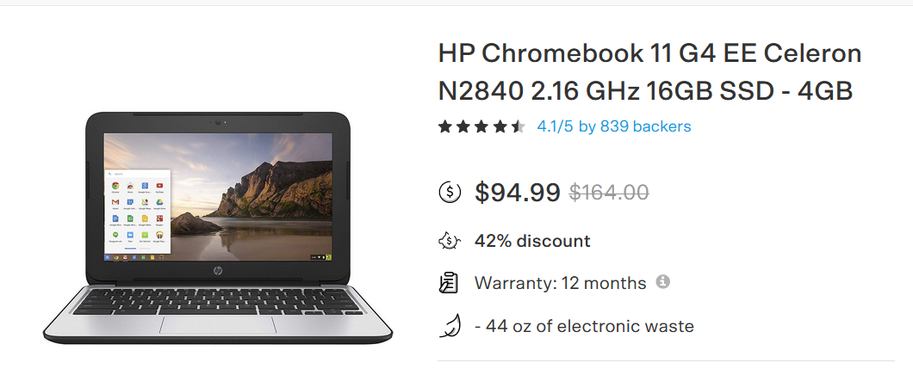

DRAFT
DRAFT
AWS On-boarding Overview¶
Executive Summary¶
You really should be using the cloud.¶
I can help you with all the details.
Let’s get started!
Offer available for a limited time only.
Deliverables¶
A self directed jupyter/python center of excellence
A set of poorly written Cookbooks for doing science
A repository of very useful jupyter notebooks and libraries
A refined, SMALL, list of winning technologies that accelerate science and cool decision fatigue fever.
A cloud Sherpa informal help-desk.
An instance of end-to-end science in the cloud - COGs in –> COGs out
A model recipe, “HowTo/TL;DR” path for moving to the cloud - likely rapidly.
A “Frontline” like docuseries on “Behind the Enemy Lines of a Covert DevOps Expert”
Introduction¶
The purpose of this “class” and more important this community of scientists is to examine AWS by playing with the CHS AWS cloud.
A secondary purpose is to promote the concept of shared science and shared data using the PANGEO reference architecture
There are many tertiary goals for this project hinted at in the pages of this document/web-page.
This document is organized as follows:
AWS On-boarding Overview
Data Science Cookbook
DataOps Cookbook
Disclaimer
This document is a rough work-in-progress drafty draftI expect to sand off some of the rough edges based on the actual facts from my classmates.
The above sections are aspirational with no guarantee of completion
Background¶
My name is Tony Butzer and I work with the Open Data Cube and PANGEO communities to help make science easy and fun.
I just completed 9 month project to move the EvapoTranspiration VegET model from on-prem desktops to the cloud. This team was pleased with the performance improvements afforded by AWS S3. However; there is still much work to do on all of our parts to make the PANGEO experience useful to a broad class of scientific needs.
I want to build relationships with the science teams and help understand and fill any gaps in the PANGEO solution.
This document and “class” will improve the toolkit and perhaps ease the on-boarding for some folks wanting to explore AWS, PANGEO as an option for science models and science sharing.
I want to organize all the aspects of building xarrays in one place and point folks to this using the myriad of communication channels we have today.
Scientists will rule the world¶
For a few years now, I have been saying that compute is free for those who have a viable science model.
Most people look at me like I am crazy when I say this.
But I have seen compute evolve from this.

TO THIS

TO THIS

Compute is commodity and nowhere is this more true than the kingdom of the cloud.
Don’t fret over costs in the cloud. Because it will impede your progress to getting there.
If the cloud is at the top of Mount McKinley - (“those HPC bastards already stole the name Denali - what a great name.) then this class should be like finding a secret elevator in the middle of the mountain.

Expected Audience¶
A scientist that wants Landsat and/or Sentinel at their fingertips and wants to provide their output/product to a wide range of customers
A scientist that wants to easily share models and papers with individuals inside and outside of USGS.
A young python programmer that wants to make an impact on the world
A project scientist that wants to easily exploit AWS
Anyone wanting to get good at Jupyter
A scientist that wants to migrate from Windows to Linux
A scientist that wants to move at a faster pace than currently afforded
A technical support person that wants to do their job way more efficiently and effectively.
You are an early adopter of cloud technologies and can envision the utility it will bring to your science.
When? – Class Schedule¶
weekly - tuesdays at noon?
odd weeks will be professor office hours
independent labs
custom problems
moving and finding science data assets to/from AWS
python package wrangling
etc tbd …

How can the cloud serve the diverse/Byzantine EROS Science Division?¶
In our Open Data Cube Hackathons - we divide the group into threads:
Developers
Users - Scientists?
Partners - Managers, Stake-holders
Some folks will fit into multiple Threads - that’s OK
In the cloud we have tools that can serve each of these elements as well as hybrids
Gabriel Senay is a fabulous scientist that delegates all his Jupyter work.
Vision¶
Make Science Easy and Fun.
Demonstrate PANGEO Architecture via practical science case studies
Document AWS open source python tools for science
Other Titles¶
Harmony - for lots of reasons
“Stop Building Dark Repositories; Dark Repositories Suck”
“Custom cloud training for the eclectic USGS/EROS science team”
“Deep Dive into PANGEO; pangeo boot-camp”
“One size fits all PANGEO training FAILED to make a big enough impact!”
“PANGEO its way more than just notebooks”
“Day in the Life of a New Cloud Science Project”
“ ET Case Study”
“permafrost case study”
“The Cloud? … Is this Anything?; Are we onto something here?”
“A firehose of info - followed by an epiphany and several zen moments.”
Ten things to do immediately with your new CHS CUSTOM ACCOUNT
Computers and Website¶
A compute/computer/ec2/instance in the cloud is the same as a computer in EROS’s CR2!
let me say that again
A computer in the cloud is the SAME as a computer in EROS’s CR2!
linux is linux wherever it swims
The INSTANCE butzer-harmony-neal-web is running -- t2.micro
10.12.69.216
### also need a mini-pangeo -- aka the littlest jupyter hub HERE - action - whole class and tony
A Tale of Two Computers¶
We will use exactly two computers in this class - they will live happily in the CHS/AWS cloud
until we terminate them - ha ha ha - these are cattle not pets - don’t get attached - attachment leads to dukkha!
they will have:
two names
butzer-harmony-neal-web – webserver; admin box; webapps
butzer-harmony-neal-mini-pangeo-dev-prod-box – mini-pangeo; simple docker scaling machine
two ip address
10.12.69.216 — ### VPN Access Only
10.12.69.233 - tbd also need the VPN and ssh and or jupyter to access
two AWS instance types (leased):
t2.micro - small and cheap
t3a-2xlarge - bigger and our workhorse
Human Resources¶
I am looking for people who do Python in Jupyter to Join Forces
I am hiring an SDSU Intern to do visualizations - fun job :-)
I am hoping to have another .25 FTE
but I really could use even more resources to make the cloud a better world for scientists
I want to meet Alemayehu and compare cloud notes and discuss making more people accept Jupyter
even if they don’t see/love the notebook
by creating codeless dashboards and better desktop integrations
NOTE: I think our organizational structure can make it challenging to get the right birds-of-a-feather together
KANBAN - kanboard - tony?¶
Overview¶
Project Initiation and Student Roadmap
Practical Steps
Why
Cloud Differences
Cloud Similarities
Cloud Advantages
Cloud Disadvantages
ET Case Study
PANGEO - “Dedicated to easing the data and compute burdens for THE SCIENTIST”
Jupyter
AWS Compute
AWS Storage
AWS Public Data Available
Data Wrangling
ssh
scp
Who from Science is Exploring the Cloud
Project Specific Specialities
SageMaker and ML
Students¶
I will interview each student to find out how they want to apply this training
essentially their personal/custom goals for the AWS cloud.
What you will need for this class¶
. A used chromebook 

a chromebook and the right github repo is worth $200,000 a year.
https://github.com/tonybutzer/harmony/blob/main/class/06-Instructor/01-Students.ipynb
http://10.12.69.216:8080/notebooks/jovyan/06-Instructor/01-Students.ipynb
Pastick, Neal (Contractor) J
Postma, Kory (Contractor)
Bunde, Brett (Contractor)
Danielson, Patrick (Contractor)
Butzer, Tony (Contractor)
Dahal, Devendra (Contractor)
Wylie, Bruce K
Rover, Jennifer
Zhou, Qiang (Contractor)
Rigge, Matthew B
Boyte, Stephen
Smith, Kelcy (Contractor) L
Anthony, Michelle (Contractor) L
Instructors Live¶
Tony Butzer
Nathan Roberts
Aaron Friez
Rich Signell
Instructors by Example¶
Ryan Abernathey - PANGEO
Chris Holmes - COGS and STAC
Matt Hansen - STAC
Scott Henderson - Landsat and Sentinel Jupyter Examples
Student Individual Goals:¶
Comment¶
Its great that we have a good cross-section of roles represented in this class
management - scientists - computer scientists - EXACTLY what is needed - its a partnership
this should be a safe space - lets keep it that way
Tony¶
I want to demystify the cloud.
I want to accelerate science to keep up with the earth and human challenges we face
I will be asking you folks lots of questions about the effectiveness of Jupyter and how to work with such a diverse group of folks.
Should folks be trained on linux, python, jupyter, docker? – Can I help with that training?
Techniques to reduce Data Wrangling?
RESPONSE
I think you should partner with Rich Signell and help him with his new project incubator concept
Here is a recent note from Rich:
We didn’t have a name yet. I’m supposed to propose a plan to our program council on Dec 14. It would be good to have a name by then. Some of the ones words we could use to form a name are: Open, Scalable, Framework, Reproducible, Architecture, Incubator, Lab, Cloud, Analysis, Visualization
Scalable Analysis Framework for the Earth (SAFE)
Scalable Cloud Architecture
Steffi¶
My Evapo model runs pitifully slow in on-prem gear
The ARc tools are starting to show their age and they are expensive
I can’t easily procure the tools and infrastructure I need to achieve my audacious goals.
My life is consumed with Data Wrangling - I would like to do more science - can you help me?
RESPONSE
Problem solved - next problem - “Ross Perot”
we were able to collaborate with Universities
we were easily able to share our output products with Ward Sanford, Wesley Zell and Gabriel Senay
we started writing visualizations
we think we can do so much more with just a tiny bit more staff
the cloud infrastructure is vast if not infinite - the sky/cloud is the limit
Jennifer¶
So, there are several aspects that I’m interested in.
One, as lead for LCMAP applications, our tools for the user community to use once LCMAP is in the cloud. My initial thoughts are mostly visualization.
There might also be workflows in py that we could move to a noteboook.
Also, I have an interest from just a research perspective.
RESPONSE
You have several of the same goals/needs as Steffi Kagone
She wanted better/faster pipelines
Jupyter is just the prototyping and developing tool - not everyone has to be proficient in jupyter
Docker is the deployment tool - as a leader you should demand docker in your projects - and EROS has plenty of docker experts and we will be growing these daily.
As a researcher - notebooks and now dashboards will make sharing your work easier
Data asset sharing in the cloud is way easier than portals, ftp, http, machine to machine etc - and this capability will explode in the next 3 years - lets be ready and let’s share the burden
Eliminate the waste of replication inherent in
"Dark Repositories"People complain about human silos and fiefdoms - in the cloud and with tools like M$ Teams we have the ability to complain by creating a healthy collaborative space free from over management and segmentation.
Thanks for sitting in on these classes/discussions its important that we span some of the natural chasms in an organization
Qiang (chi-ong)¶
Sanath¶
Neal¶
Understand AWS services and service costs
Compare methods and ease of use of the AWS cloud versus other platforms - HPC and GEE
Understand the differences of GEE and AWS opensource
Determine if Open Data Cube is useful to my science
Stay warm - but not too warm to melt my permafrost.
I am getting approval to stand up a CHS CUSTOM ACCOUNT - how do I effectively use that and can you help me with some of the devops and dataops aspects in AWS
I think AWS has a ton of services; how do I wade through all that? - It looks like decision fatigue to me.
I want to organize the right team to build AI/ML pipelines in AWS - Dev, Neal, Sujan Parajuli and Logan Megard.
RESPONSE
Yes I can help you with many of the cloud questions you will have - both directly and by finding the right technical resource at the right time - this is disruptive technology and a little fast paced - EROS may need to adapt its staffing models accordingly; There could be some cultural change risk there.
Another answer is lets jump in and find out - the cloud is pay as go and ephemeral - its not hard to start up or shutdown - try that with on-prem gear.
This class is really a project roadmap for your project and should help you answer some if not all the questions in the process. We will start with essentially one computer and one simple, scalable storage bucket and we can build and run your entire project with just these few elements. The AWS catalog is big and frightening - we will use just two services in my approach to the cloud.
Jupyter is a great communication tool and very versatile even without python.
My experience is that when efficient approaches are taken - those that remove several of the many choices - project milestones fall like dominoes. - Its easy to get distracted these days - so this requires discipline and intelligence.
And oh, Neal I have your web computer stood up - it took 2 minutes with terraform and docker - you’re welcome
i’ll get you logged in whenever you are ready - and give you a quick tour
COMPUTER 1 - Web server; admin box; PLUS
instance type - t2.micro - free tier - no money needed
1 cpu
1 gig memory
tiny but powerful
and essential free no charge - on the house - drinks are on me … :-)
COMPUTER 2 - Development/Test/Production/Scaling101¶
I’ll build you a better one on tuesday
8 CPUs
32 Gig Memory
200 Gig Disk
Infinite s3 storage
$200/month - also on me until you get your CHS account - we will move it there
I use AMD processors since they are cheaper than intels
instance type is t3a-2xlarge - these AWS names - wow!
We will stand up a Jupyter Hub there - just cause it offers us so much in the way of collaboration
I have several geeks that like Jupyter we can leverage these folks
We will also build our docker pipeline with python on this machine - and scale bigger - if we need to - UNLIKELY.
You will have to be the sage in SageMaker - intelligence even the artificial type is not in my brain space.
Bruce¶
As a leader of a team of scientists I want to better understand the cloud and avoid any misunderstandings or pitfalls.
I want to create a path from our current technology stack to a future one given that more and more pressure is being exerted from the cloud crowd
My boss is suggesting we examine cloud technologies for my science initiatives
Many proposals and in some cases our competitors will use cloud technologies - I don’t want to be left behind
I am not sure we have all of the management structures in place to accommodate things like the cloud
I want EROS to be a world class data center on the prairie where we take a leadership role in integrating science with technology as a shared responsibility and we live that vision.
…more to come …¶
Questions, Suggestions, Improvements¶
Just start a chat with tony butzer anytime - I will add the question and maybe the solution to this pangeo-cloud-web-training-student-teacher-guide-roadmap-sphinx-thingy.
Niche/Esoteric Jargon can be a real turn-off!¶
So I will grow a glossary here GLOSSARY LINK
References¶
https://lpdaac.usgs.gov/resources/e-learning/
https://registry.opendata.aws/landsat-8/
https://docs.opendata.aws/landsat-pds/readme.html
https://corteva.github.io/rioxarray/stable/examples/clip_box.html
https://corteva.github.io/rioxarray/stable/examples/convert_to_raster.html
https://www.usgs.gov/core-science-systems/nli/landsat
https://www.usgs.gov/core-science-systems/nli/landsat/landsat-collection-2
Like Button¶
sponsors=['Pete Doucette', 'Doug Jaton', 'Steve LaBahn', 'Gabriel Senay']
my_class='Tonys Pangeo Useful School'
if 'Useful' in my_class:
send_thankyou_email(sponsors)
else:
pass